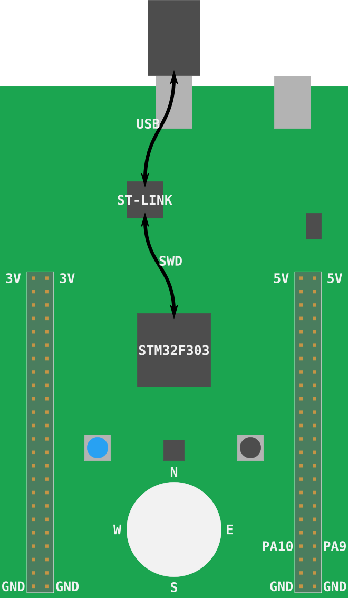

Flash it
Flashing is the process of moving our program into the microcontroller’s (persistent) memory. Once flashed, the microcontroller will execute the flashed program every time it is powered on.
In this case, our led-roulette program will be the only program in the microcontroller memory.
By this I mean that there’s nothing else running on the microcontroller: no OS, no “daemon”,
nothing. led-roulette has full control over the device.
Onto the actual flashing. First thing we need to do is launch OpenOCD. We did that in the
previous section but this time we’ll run the command inside a temporary directory (/tmp on *nix;
%TEMP% on Windows).
Make sure the F3 is connected to your computer and run the following commands in a new terminal.
For *nix & MacOS:
cd /tmp
openocd -f interface/stlink-v2-1.cfg -f target/stm32f3x.cfg
For Windows Note: substitute C: for the actual OpenOCD path:
cd %TEMP%
openocd -s C:\share\scripts -f interface/stlink-v2-1.cfg -f target/stm32f3x.cfg
NOTE Older revisions of the board need to pass slightly different arguments to
openocd. Review this section for the details.
The program will block; leave that terminal open.
Now it’s a good time to explain what the openocd command is actually doing.
I mentioned that the STM32F3DISCOVERY (aka F3) actually has two microcontrollers. One of them is used as a programmer/debugger. The part of the board that’s used as a programmer is called ST-LINK (that’s what STMicroelectronics decided to call it). This ST-LINK is connected to the target microcontroller using a Serial Wire Debug (SWD) interface (this interface is an ARM standard so you’ll run into it when dealing with other Cortex-M based microcontrollers). This SWD interface can be used to flash and debug a microcontroller. The ST-LINK is connected to the “USB ST-LINK” port and will appear as a USB device when you connect the F3 to your computer.

As for OpenOCD, it’s software that provides some services like a GDB server on top of USB devices that expose a debugging protocol like SWD or JTAG.
Onto the actual command: those .cfg files we are using instruct OpenOCD to look for a ST-LINK USB
device (interface/stlink-v2-1.cfg) and to expect a STM32F3XX microcontroller
(target/stm32f3x.cfg) to be connected to the ST-LINK.
The OpenOCD output looks like this:
$ openocd -f interface/stlink-v2-1.cfg -f target/stm32f3x.cfg
Open On-Chip Debugger 0.10.0
Licensed under GNU GPL v2
For bug reports, read
http://openocd.org/doc/doxygen/bugs.html
Info : auto-selecting first available session transport "hla_swd". To override use 'transport select <transport>'.
adapter speed: 1000 kHz
adapter_nsrst_delay: 100
Info : The selected transport took over low-level target control. The results might differ compared to plain JTAG/SWD
none separate
Info : Unable to match requested speed 1000 kHz, using 950 kHz
Info : Unable to match requested speed 1000 kHz, using 950 kHz
Info : clock speed 950 kHz
Info : STLINK v2 JTAG v37 API v2 SWIM v26 VID 0x0483 PID 0x374B
Info : using stlink api v2
Info : Target voltage: 2.888183
Info : stm32f3x.cpu: hardware has 6 breakpoints, 4 watchpoints
The “6 breakpoints, 4 watchpoints” part indicates the debugging features the processor has available.
Leave that openocd process running, and in the previous terminal or a new terminal
make sure that you are inside the project’s src/05-led-roulette/ directory.
I mentioned that OpenOCD provides a GDB server so let’s connect to that right now:
Execute GDB
First, we need to determine what version of gdb you have that is capable of debugging ARM binaries.
This could be any one of the commands below, try each one:
arm-none-eabi-gdb -q -ex "target remote :3333" target/thumbv7em-none-eabihf/debug/led-roulette
gdb-multiarch -q -ex "target remote :3333" target/thumbv7em-none-eabihf/debug/led-roulette
gdb -q -ex "target remote :3333" target/thumbv7em-none-eabihf/debug/led-roulette
NOTE: If you are getting
target/thumbv7em-none-eabihf/debug/led-roulette: No such file or directoryerror, try adding../../to the file path, for example:$ gdb -q -ex "target remote :3333" ../../target/thumbv7em-none-eabihf/debug/led-rouletteThis is caused by each example project being in a
workspacethat contains the entire book, and workspaces have a singletargetdirectory. Check out [Workspaces chapter in Rust Book] for more.
Failing case
You can detect a failing case if there is a warning or error after the Remote debugging using :3333 line:
$ gdb -q -ex "target remote :3333" target/thumbv7em-none-eabihf/debug/led-roulette
Reading symbols from target/thumbv7em-none-eabihf/debug/led-roulette...
Remote debugging using :3333
warning: Architecture rejected target-supplied description
Truncated register 16 in remote 'g' packet
(gdb)
Successful case
Successful case 1:
$ arm-none-eabi-gdb -q -ex "target remote :3333" target/thumbv7em-none-eabihf/debug/led-roulette
Reading symbols from target/thumbv7em-none-eabihf/debug/led-roulette...
Remote debugging using :3333
cortex_m_rt::Reset () at ~/.cargo/registry/src/github.com-1ecc6299db9ec823/cortex-m-rt-0.6.13/src/lib.rs:497
497 pub unsafe extern "C" fn Reset() -> ! {
(gdb)
Successful case 2:
~/embedded-discovery/src/05-led-roulette (master)
$ arm-none-eabi-gdb -q -ex "target remote :3333" target/thumbv7em-none-eabihf/debug/led-roulette
Reading symbols from target/thumbv7em-none-eabihf/debug/led-roulette...
Remote debugging using :3333
0x00000000 in ?? ()
(gdb)
In both failing and successful cases you should see new output in the OpenOCD terminal, something like the following:
Info : stm32f3x.cpu: hardware has 6 breakpoints, 4 watchpoints
+Info : accepting 'gdb' connection on tcp/3333
+Info : device id = 0x10036422
+Info : flash size = 256kbytes
NOTE If you are getting an error like
undefined debug reason 7 - target needs reset, you can try runningmonitor reset haltas described here.
By default OpenOCD’s GDB server listens on TCP port 3333 (localhost). This command is connecting to that port.
Update ../.cargo/config.toml
Now that you’ve successfully determined which debugger you need to use
we need to change ../.cargo/config.toml so that the cargo run command will succeed.
NOTE
cargois the Rust package manager and you can read about it here.
Get back to the terminal prompt and look at ../.cargo/config.toml:
~/embedded-discovery/src/05-led-roulette
$ cat ../.cargo/config.toml
# default runner starts a GDB sesssion, which requires OpenOCD to be
# running, e.g.,
## openocd -f interface/stlink.cfg -f target/stm32f3x.cfg
# depending on your local GDB, pick one of the following
[target.thumbv7em-none-eabihf]
runner = "arm-none-eabi-gdb -q -x ../openocd.gdb"
# runner = "gdb-multiarch -q -x ../openocd.gdb"
# runner = "gdb -q -x ../openocd.gdb"
rustflags = [
"-C", "link-arg=-Tlink.x",
]
[build]
target = "thumbv7em-none-eabihf"
Use your favorite editor to edit ../.cargo/config.toml so that the
runner line contains the correct name of that debugger:
nano ../.cargo/config.toml
For example, if your debugger was gdb-multiarch then after
editing the git diff should be:
$ git diff ../.cargo/config.toml
diff --git a/f3discovery/src/.cargo/config.toml b/f3discovery/src/.cargo/config.toml
index 2f38f6b..95860a0 100644
--- a/f3discovery/src/.cargo/config.toml
+++ b/f3discovery/src/.cargo/config.toml
@@ -3,8 +3,8 @@
## openocd -f interface/stlink.cfg -f target/stm32f3x.cfg
# depending on your local GDB, pick one of the following
[target.thumbv7em-none-eabihf]
-runner = "arm-none-eabi-gdb -q -x ../openocd.gdb"
-# runner = "gdb-multiarch -q -x ../openocd.gdb"
+# runner = "arm-none-eabi-gdb -q -x ../openocd.gdb"
+runner = "gdb-multiarch -q -x ../openocd.gdb"
# runner = "gdb -q -x ../openocd.gdb"
rustflags = [
"-C", "link-arg=-Tlink.x",
Now that you have ../.cargo/config.toml setup let’s test it using cargo run to
start the debug session.
NOTE The
--target thumbv7em-none-eabihfdefines which architecture to build and run. In our../.cargo/config.tomlfile we havetarget = "thumbv7em-none-eabihf"so it is actually not necessary to specify--targetwe do it here just so you know that parameters on the command line can be used and they override those inconfig.tomlfiles.
cargo run --target thumbv7em-none-eabihf
Results in:
~/embedded-discovery/src/05-led-roulette
$ cargo run --target thumbv7em-none-eabihf
Finished dev [unoptimized + debuginfo] target(s) in 0.14s
Running `gdb-multiarch -q -x ../openocd.gdb /home/adam/vc/rust-training/discovery/f3discovery/target/thumbv7em-none-eabihf/debug/led-roulette`
Reading symbols from /home/adam/vc/rust-training/discovery/f3discovery/target/thumbv7em-none-eabihf/debug/led-roulette...
0x08000230 in core::fmt::Arguments::new_v1 (pieces=..., args=...)
at /rustc/d5a82bbd26e1ad8b7401f6a718a9c57c96905483/library/core/src/fmt/mod.rs:394
394 /rustc/d5a82bbd26e1ad8b7401f6a718a9c57c96905483/library/core/src/fmt/mod.rs: No such file or directory.
Loading section .vector_table, size 0x194 lma 0x8000000
Loading section .text, size 0x1ad8 lma 0x8000194
Loading section .rodata, size 0x5a4 lma 0x8001c6c
Start address 0x08000194, load size 8720
Transfer rate: 12 KB/sec, 2906 bytes/write.
Breakpoint 1 at 0x80001e8: file src/05-led-roulette/src/main.rs, line 7.
Note: automatically using hardware breakpoints for read-only addresses.
Breakpoint 2 at 0x800020a: file src/lib.rs, line 570.
Breakpoint 3 at 0x8001c5a: file src/lib.rs, line 560.
Breakpoint 1, led_roulette::__cortex_m_rt_main_trampoline () at src/05-led-roulette/src/main.rs:7
7 #[entry]
halted: PC: 0x080001ee
led_roulette::__cortex_m_rt_main () at src/05-led-roulette/src/main.rs:10
10 let x = 42;
Bravo, we will be modifying ../.cargo/config.toml in future. But, since
this file is shared with all of the chapters those changes should be made with
that in mind. If you want or we need to make changes that only pertain to
a particular chapter then create a .cargo/config.toml local to that chapter
directory.
Flash the device
Assuming you have GDB running, if not start it as suggested in the previous section.
NOTE The
-x ../openocd.gdbarguments togdbis already setup to flash the device, so explicitly flashing the project code to the device is normally handled with a simplecargo run. We’ll cover the openocd configuration script in the next section.
Now use the load command in gdb to actually flash the program into the device:
(gdb) load
Loading section .vector_table, size 0x194 lma 0x8000000
Loading section .text, size 0x20ec lma 0x8000194
Loading section .rodata, size 0x514 lma 0x8002280
Start address 0x08000194, load size 10132
Transfer rate: 17 KB/sec, 3377 bytes/write.
You’ll also see new output in the OpenOCD terminal, something like:
Info : flash size = 256kbytes
+Info : Unable to match requested speed 1000 kHz, using 950 kHz
+Info : Unable to match requested speed 1000 kHz, using 950 kHz
+adapter speed: 950 kHz
+target halted due to debug-request, current mode: Thread
+xPSR: 0x01000000 pc: 0x08000194 msp: 0x2000a000
+Info : Unable to match requested speed 8000 kHz, using 4000 kHz
+Info : Unable to match requested speed 8000 kHz, using 4000 kHz
+adapter speed: 4000 kHz
+target halted due to breakpoint, current mode: Thread
+xPSR: 0x61000000 pc: 0x2000003a msp: 0x2000a000
+Info : Unable to match requested speed 1000 kHz, using 950 kHz
+Info : Unable to match requested speed 1000 kHz, using 950 kHz
+adapter speed: 950 kHz
+target halted due to debug-request, current mode: Thread
+xPSR: 0x01000000 pc: 0x08000194 msp: 0x2000a000
Our program is loaded, let’s debug it!